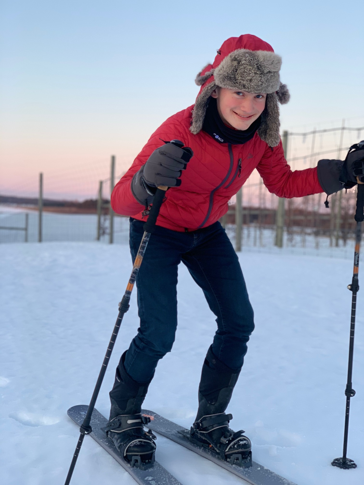

Paul Bancroft
High School Senior in St. Johns, Michigan
I am a homeschool senior planning to attend Clarks Summit University after I graduate.
I enjoy participating in small group Bible studies, and I am active in my local church: First Baptist Church of St. Johns, MI. I help out with childcare during services, performing maintenance, and wherever else I can be of assistance.
I also enjoy farming, reading, and restoring my car, a 1966 Ford Thunderbird.
EDUCATION
SeniorThe Academy of Home Education